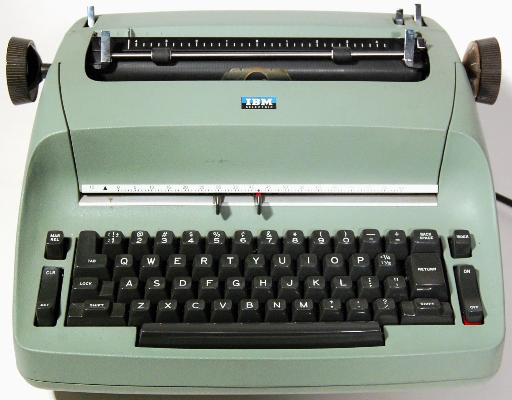
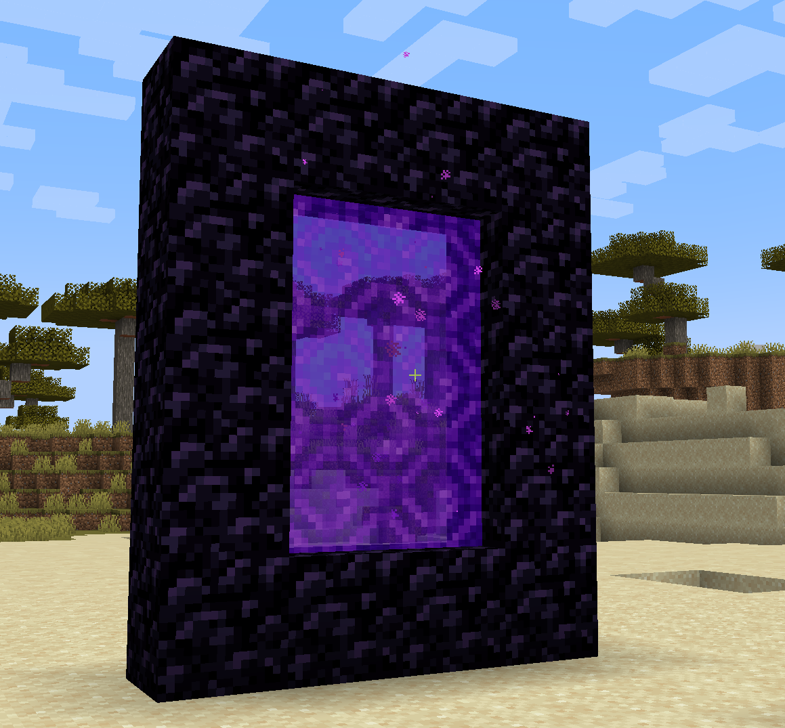

Loops#
Introduction#
For this tutorial we are going to write code that will create a Nether Portal. If you don’t know about Nether Portals, you can read about them here: https://minecraft.wiki/w/Nether_portal.
A Nether Portal requires a minimum of 14 blocks. Now we could use a similar
approach as that for the iron golem in the previous tutorial. But that would
be a lot of typing. So instead we’ll take a look at Python for loops.
Backups#
Before we proceed I recommend that you learn about making backups of the world. That way we can experiment as much as we like and restore our world back to a good state. Go and read Backups of mciwb-server and then come back to this tutorial.
Whitespace#
Python uses whitespace to delimit blocks of code. You can
use the tab key to indent code that is part of a block.
“For loops” are our first example of this. The code block that is controlled by the for loop is indented by 4 spaces. In Python when you write a for statement it always expects the next line to be indented. If you have multiple lines inside of your for loop they must all be indented by the same amount.
In the later example you will see a for loop inside a for loop. In this case the inner loop is indented by 8 spaces (4 spaces more than the outer loop).
Note
It is important to remember that spaces are significant in Python code. This can occasionally cause problems if you are copying and pasting code between a web page and a text editor.
For Loops#
For loops provide the mechanism to repeat a block of code a number of times.
Try the following code in iPython, note that the second line
is indented by 4 spaces, you can use the tab key to do this indent.
for i in range(10):
print("hello")
print(i)
The range function creates a list of numbers from 0 to 9 (i.e. it starts
at 0 and does 10 numbers).
Then for loops through those numbers. For
each of them it sets the variable i equal to the current number in the range
and then executes the code block.
An important concept in Python is that a block of code is declared by indenting it (usually by 4 spaces).
Thus the two print functions above are inside of the block controlled by the for loop. This is why both of those print functions get called 10 times each.
The print() function simply outputs values to the terminal.
Note
In the above code we used a string of characters which was the word
“hello”. Python variables with this type of data are called str and
you can make strings by enclosing your text in quotes as we did above
for “hello”.
Nested Loops#
You can have loops inside of loops which is called a nested loop. Try the following:
for i in range(3):
print("i is ", i)
for j in range(3):
print(" j is ", j)
print(" j times i is ", j * i)
This is two loops inside of each other, each loops 3 times and so the total number of times the code block is executed is 3 times 3 = 9.
- Exercise:
Try executing the above nested loop in iPython and see if you can work out why the output looks like it does.
Note
We used a new operator here. The * operator is used to multiply two
numbers together. It is just the same as multiplication in basic
arithmetic.
Most computer languages use the star symbol to signify multiplication. This is because there is no multiply symbol on computer keyboards since they evolved from typewriter keyboards!
Similarly the symbol / is used to represent “divide by”.
The picture below is the advanced IBM ‘Selectric’ typewriter that came out in 1961. At this point IBM did not think that people needed mathematical symbols on their keyboards. As computers took over in the next few decades they just copied the same layout.


IBM Selectric typewriter 1961#
In case you don’t know, typewriters printed what you typed directly to paper and did not save it! Imagine that!
Nether Portal#
We have enough knowledge now to make loops to build a nether portal. Try the following code in your Python Terminal:
pos = world.player.pos
for x in range(4):
# bottom row
world.set_block(pos + Direction.EAST * x, Item.OBSIDIAN)
# top row
world.set_block(pos + Direction.EAST * x + Direction.UP * 4 , Item.OBSIDIAN)
for y in range(4):
# left side
world.set_block(pos + Direction.UP * y, Item.OBSIDIAN)
# right side
world.set_block(pos + Direction.UP * y + Direction.EAST * 3 , Item.OBSIDIAN)
c = get_client()
c.give("@a", Item.FLINT_AND_STEEL)


The most important thing to note here is that I used multiplication on the Direction values to add them multiple times to a starting position. This means that:
# bottom row
world.set_block(pos + Direction.EAST * x, Item.OBSIDIAN)
places an obsidian block at the position offset from pos in an Easterly
direction. How much it is offset is determined by the value of x. We know
that the for loop is looping over values of x from 0 to 3. So we have:
Loop 1 with x = 0
set block at pos
Loop 2 with x = 1
set block at 1 step EAST from pos
Loop 3 with x = 2
set block at 2 steps EAST from pos
Loop 4 with x = 3
set block at 3 steps EAST from pos
For the top row we do the same thing but also add 4 steps upwards. The
loop over y does a similar thing for the two sides of the portal.
- Exercise:
See if you can experiment with creating different sizes of nether portals. Maybe you can create other shapes? If you used a nested loop you could make steps for example?
Flint and Steel#
Did you notice the get_client and c.give() at the end of the code
snippet? This handed a Flint and Steel to every player in the world.
You can equip this in your hand and ignite
your portal by left clicking in the interior of the portal. It should then
look like my picture above and you can jump through to see the Nether.
For an advanced, in-depth description of the use of get_client() see MCIPC Client object
Comments#
Some of the lines in the above code example are comments. In Python we precede comments with
#. This instructs Python to ignore the rest of the line.Comments do not change the behaviour of the code, rather they help you understand what the code is supposed to do. Good programmers always comment their code, especially when they are doing something that may not be immediately easy to understand.